News & Engagement
News & Engagement
Conference presentations and participation, symposium organisation, invited talks, policy engagement and academic networks. Entries are drawn from the verified academic record and listed in reverse chronological order. Academic publications are listed separately on the Publications page.
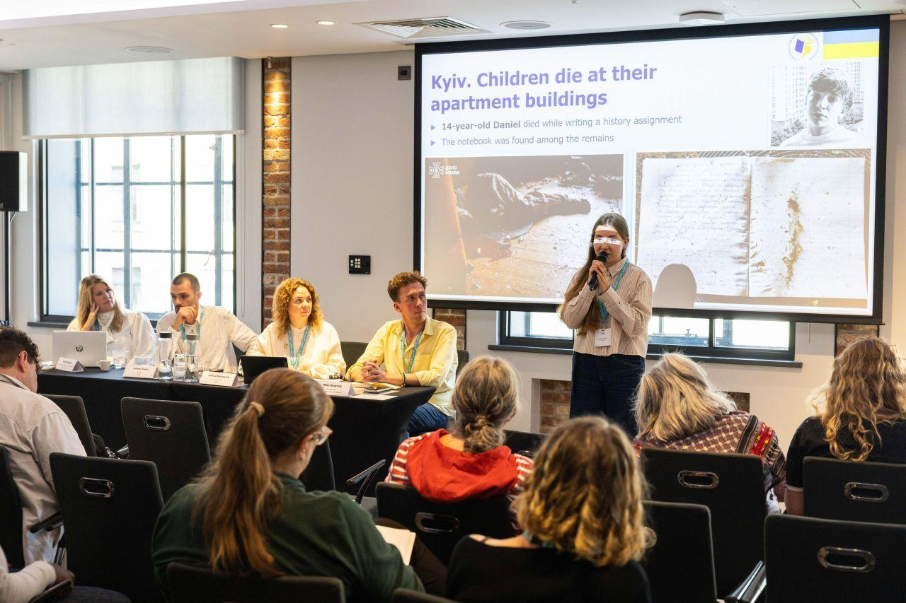
Featured engagement
National Education Union (NEU) Annual International Conference, United Kingdom
Dr Mohammedwesam Amer participated as a featured speaker at the National Education Union's Annual International Conference, contributing expertise on education in conflict settings, Palestinian education, and international solidarity under the theme "Books Not Bombs."
Engagement archive
- Conferences & Events
- Invited Talks
- Institutional Engagement
- Research & Public Dialogue
- Media & Commentary
-
Invited Speaker
London
Mohammedwesam Amer Participates in NEU International Conference on Education, War, and Global Solidarity

-
Featured Speaker
National Education Union (NEU) Annual International Conference, United Kingdom
Dr Mohammedwesam Amer participated as a featured speaker at the National Education Union's Annual International Conference, contributing expertise on education in conflict settings, Palestinian education, and international solidarity under the theme "Books Not Bombs."
Dr Mohammedwesam Amer speaking at the National Education Union Annual International Conference. -
Co-Organiser
Hypermedia Warfare and Techno-Legal Entanglements Symposium, Cambridge Digital Humanities, King's College, Cambridge, United Kingdom.

-
Invited Speaker
Campus Condorcet, Paris, France.
Dr. Wesam Amer was invited to contribute to the Week of Hospitality and Academic Freedoms in Paris, where he presented his research on reimagining higher education in Gaza. His participation brought Palestinian academic perspectives into an international dialogue on academic resilience, institutional recovery, and the future of higher education in conflict-affected contexts.
Campus Condorcet UXIL → Campus Condorcet Month of Hospitality → Full record →
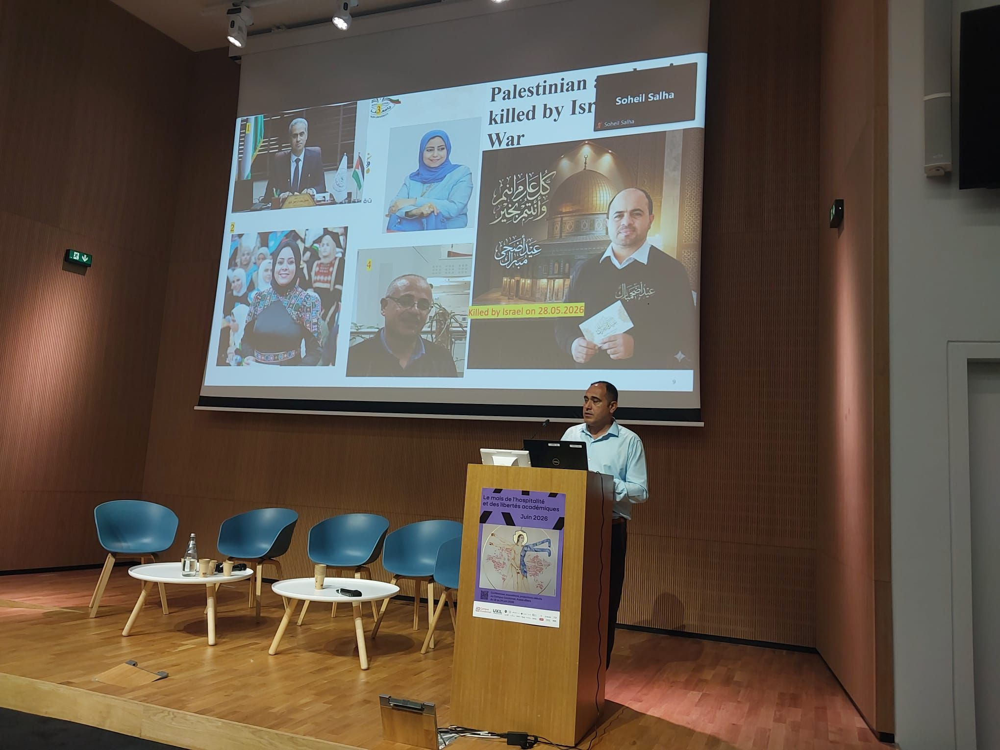
Campus Condorcet, Paris. -
Presenter
76th Annual ICA Conference, Cape Town, South Africa.
Dr. Wesam Amer participated in the International Communication Association (ICA) 2026 Conference in Cape Town, South Africa, presenting three research papers on the destruction of knowledge, media, and intellectual life in Palestine. His presentations contributed to international debates on communication, journalism, academic freedom, and the protection of knowledge during conflict.
ICA 2026 conference page → ICA 2026 programme → Full record →
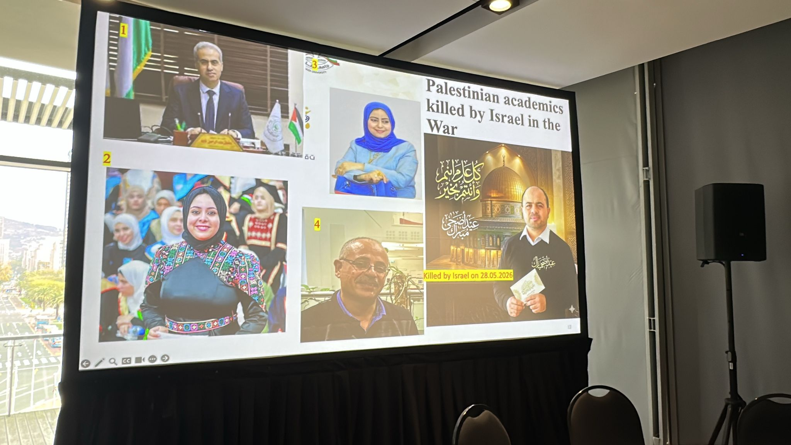
76th Annual ICA Conference, Cape Town, June 2026. -
Workshop Participant
European Parliament (attended online).
Dr. Wesam Amer participated in a workshop at the European Parliament dedicated to supporting education in Gaza, the West Bank, and Lebanon. Bringing together policymakers, academics, and civil society representatives, the event focused on practical strategies to safeguard academic continuity, expand educational opportunities, and strengthen higher education institutions facing unprecedented challenges.
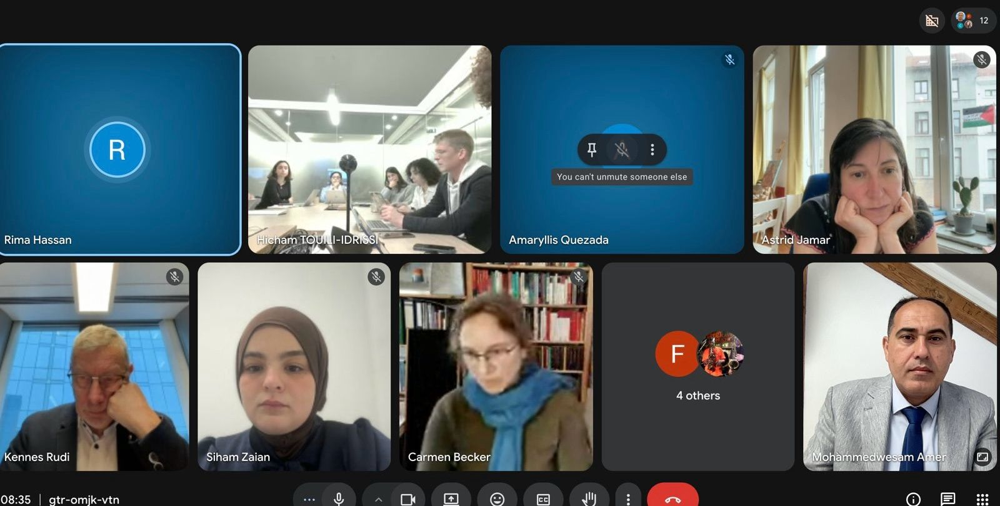
European Parliament workshop. -
Delegation Member
Waseda University, Kyoto University and Seinan Gakuin University, Japan.
Dr. Wesam Amer joined a University of Cambridge delegation visiting Japan, where he presented research at leading Japanese universities and engaged with scholars across the country. The visit advanced international academic dialogue on war communication, media, artificial intelligence, and higher education, while opening new opportunities for collaboration between the UK, Japan, Palestine, and beyond.
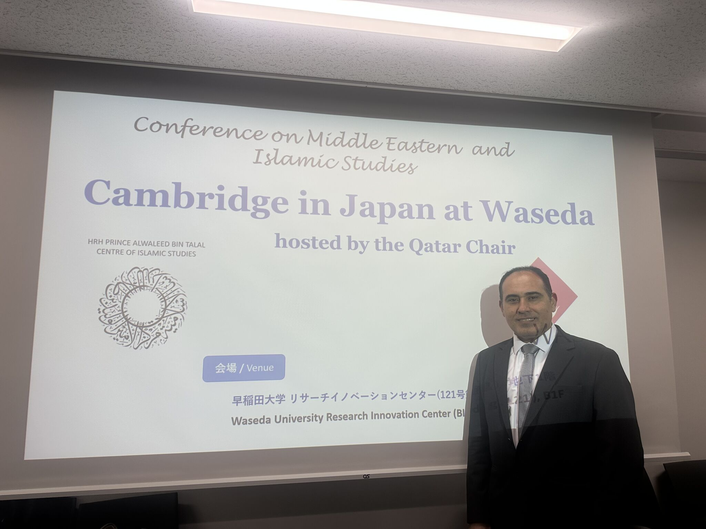
University of Cambridge delegation to Japan. -
Panellist
REAL Centre, University of Cambridge, United Kingdom.
Dr. Wesam Amer joined leading academics from South Africa and the United Kingdom in an international seminar examining academic freedom, knowledge sovereignty, and scholarly responsibility. Drawing on the Palestinian experience, he contributed to discussions on the role of universities and researchers in defending education, knowledge production, and academic solidarity amid conflict and political crisis.
UKFIET event page → Full record →
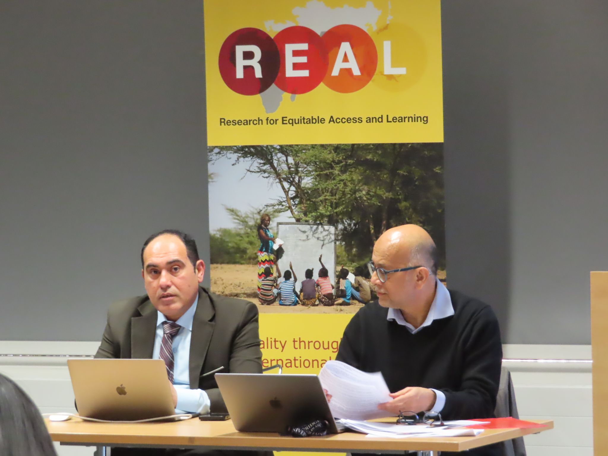
REAL Centre, University of Cambridge. -
Panellist
World Beyond War roundtable on SILENCED: The War on Journalism.
Dr. Wesam Amer participated in the roundtable discussion SILENCED: The War on Journalism, contributing to international debates on press freedom, the safety of journalists, and information control in conflict zones. During the event, he highlighted the challenges facing Palestinian journalists and examined how media framing influences public understanding and accountability.
Al Jazeera documentary → Full record →
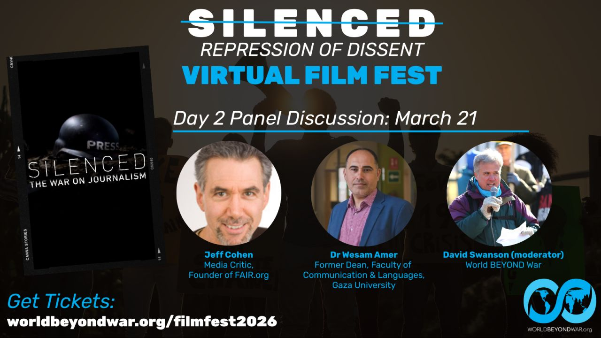
Roundtable on SILENCED: The War on Journalism. -
Invited Speaker
Cardiff University, United Kingdom.
Dr. Wesam Amer delivered a keynote-style lecture at Cardiff University, drawing on his experiences as a displaced academic from Gaza to examine scholasticide, media narratives, and AI-driven propaganda. Through a powerful research-led presentation, he brought international attention to the systematic erosion of education, knowledge, and intellectual life in conflict settings.
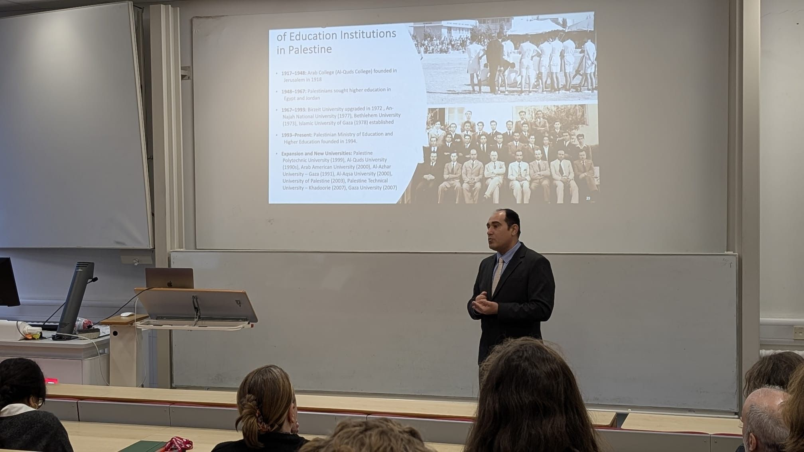
Cardiff University. -
Invited Speaker
Ludwig Maximilian University of Munich, Germany.
Dr. Wesam Amer delivered two invited lectures at Ludwig Maximilian University of Munich, examining the impact of war on Palestinian higher education and the evolving role of digital communication in conflict. His presentations brought together perspectives on scholasticide, media strategy, and the long-term consequences of war for knowledge production and academic life.
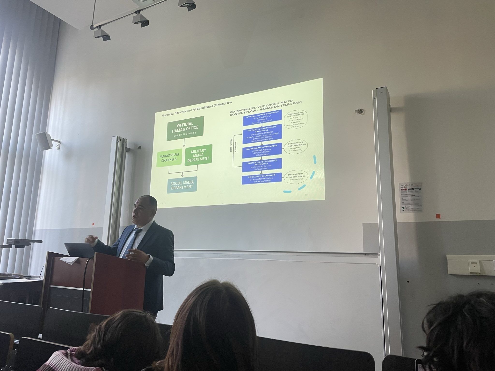
Ludwig Maximilian University of Munich. -
Expert Contributor
Gaza Tribunal, Istanbul, Türkiye.
Dr. Wesam Amer participated in the Gaza Tribunal in Istanbul, presenting evidence and analysis on scholasticide, the systematic destruction of Palestinian educational institutions and intellectual life. His contribution highlighted the impact of attacks on universities, knowledge production, and academic communities, while calling for stronger international action to protect education and academic freedom.
Gaza Tribunal programme → Gaza Tribunal final session → Full record →
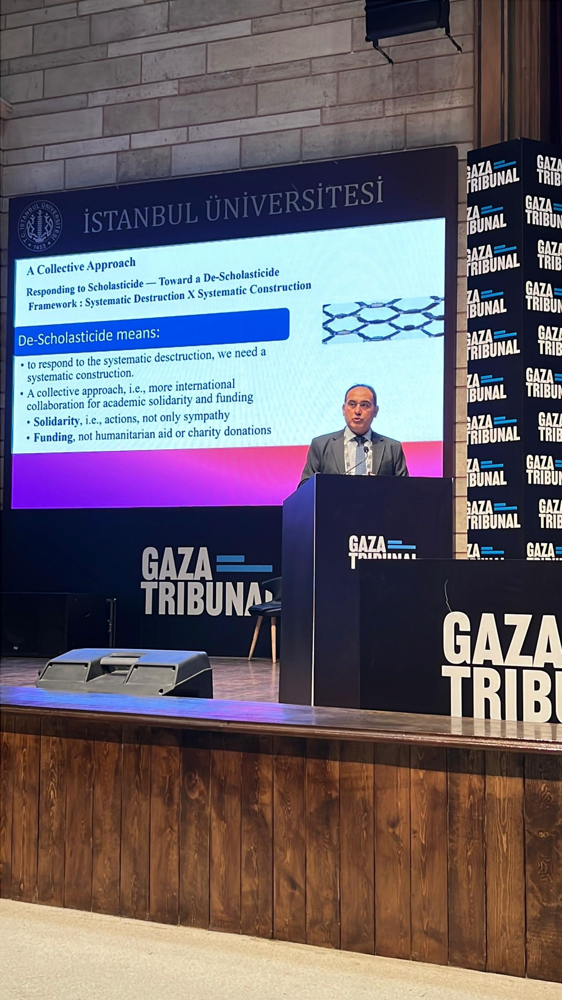
Gaza Tribunal, Istanbul. -
Invited Panel Participant
Maynooth University, Ireland.
Dr. Wesam Amer participated in a major public lecture and panel discussion at Maynooth University, where he examined the epistemic erasure of Palestinian universities and the broader phenomenon of scholasticide. Drawing on his experience as a Palestinian academic, he contributed to a critical discussion on academic freedom, institutional responsibility, and international solidarity with higher education in Palestine.
Maynooth University Law → Maynooth University news → Full record →
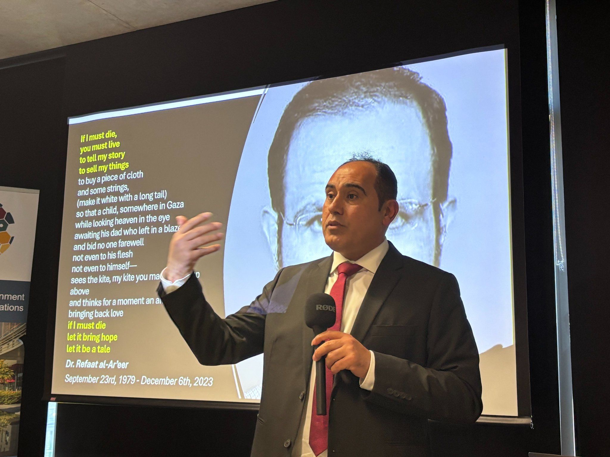
Maynooth University. -
Invited Panel Participant
Future of Journalism Conference, Cardiff University, United Kingdom.
-
Workshop Trainer
Synthetic Influence: Generative AI, Representation, and Bias in Political Communication and Computational Propaganda, Cambridge Social Data School, Cambridge Digital Humanities, United Kingdom.
-
Keynote Speaker
UN Support Mission in Libya Seminar Series for Media Professionals and Students.
-
Interviewee
dis:orient, Germany.
In an interview with the German platform dis:orient, Dr. Wesam Amer reflected on the destruction of Gaza's education system and the broader implications of scholasticide. Drawing on his experience as an academic from Gaza, he emphasized the central role of education in Palestinian society and underscored the importance of defending knowledge, academic freedom, and the right to speak.
dis:orient English → dis:orient German → Full record →
-
Panellist
University of Cambridge, United Kingdom.
Dr. Wesam Amer joined leading international scholars at the University of Cambridge for a seminar examining the intersections of research, activism, and social justice. Drawing on Palestinian experiences, he contributed to a critical discussion on the responsibilities of academics in times of conflict and the role of scholarship in confronting injustice and advancing societal change.
lebanesestudies.com → Cambridge Independent → Full record →
-
Interviewee
ABC Radio National, Australia.
Dr. Wesam Amer spoke with ABC News about the destruction of Gaza’s higher education sector, warning that thousands of Palestinian students risk becoming a “lost generation.” Drawing on his experience as Dean of the Faculty of Communication and Languages at Gaza University, he highlighted the urgent need for rebuilding academic infrastructure and protecting access to education.
abc.net.au news report → abc.net.au radio interview → Full record →
-
Head of Scientific Committee and Keynote Speaker
Media and the Palestinian Issue Amidst Digital Transformation: Reality and Prospects for the Future, Palestine Technical University.
-
Keynote Speaker
Religious Discourse in Wartime: Analysing Hamas's Military Media Strategy, American Academy of Religion Conference.
-
Invited Speaker
FAMES, University of Cambridge, United Kingdom.
Dr. Wesam Amer presented new research at FAMES, University of Cambridge, examining Hamas’s use of Telegram during the Gaza War. Drawing on critical discourse analysis, social media affordance theory, and online ethnography, the studies explored how digital platforms are used to construct narratives, reinforce identities, and sustain communication during conflict.
LMU event archive → University of Cambridge profile → Full record →
-
Peer Review and Advisory Service
- Palgrave Communications
- Australian Journal of Linguistics
- Critical Discourse Studies
- Social Media + Society
- Journalism
- Journal of Discourses (Majalat Khitabat)
- Newton Prize, UK National Commission for UNESCO